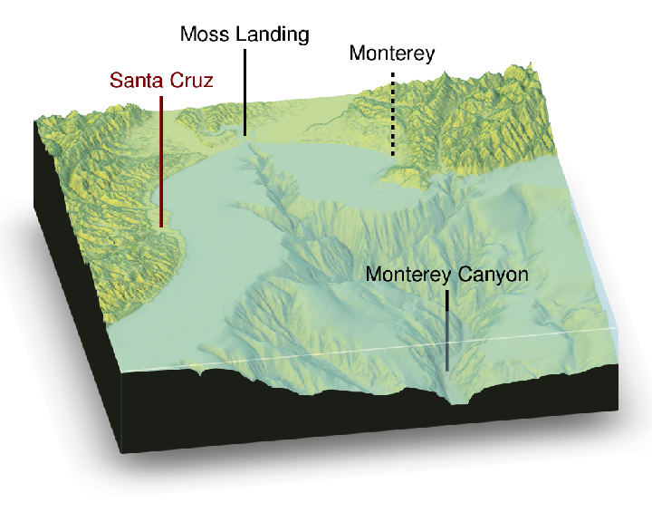
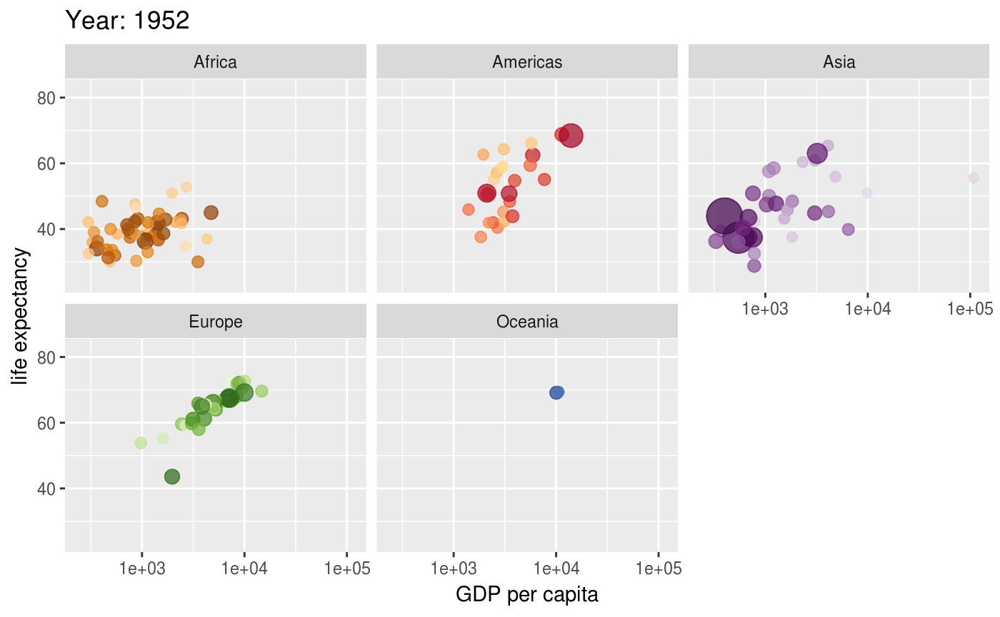
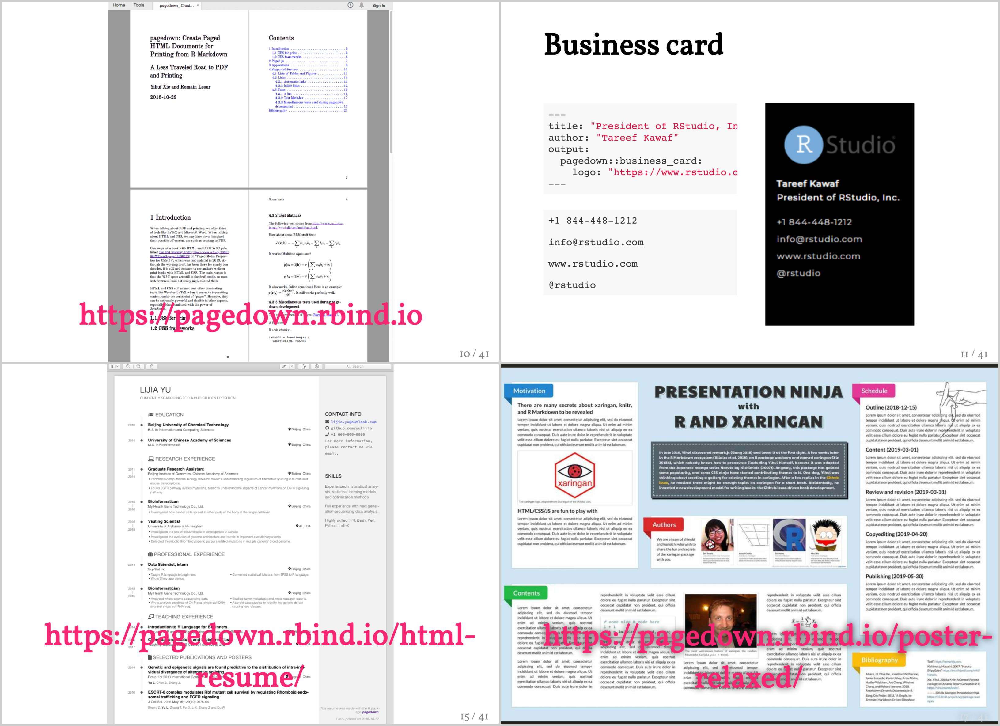
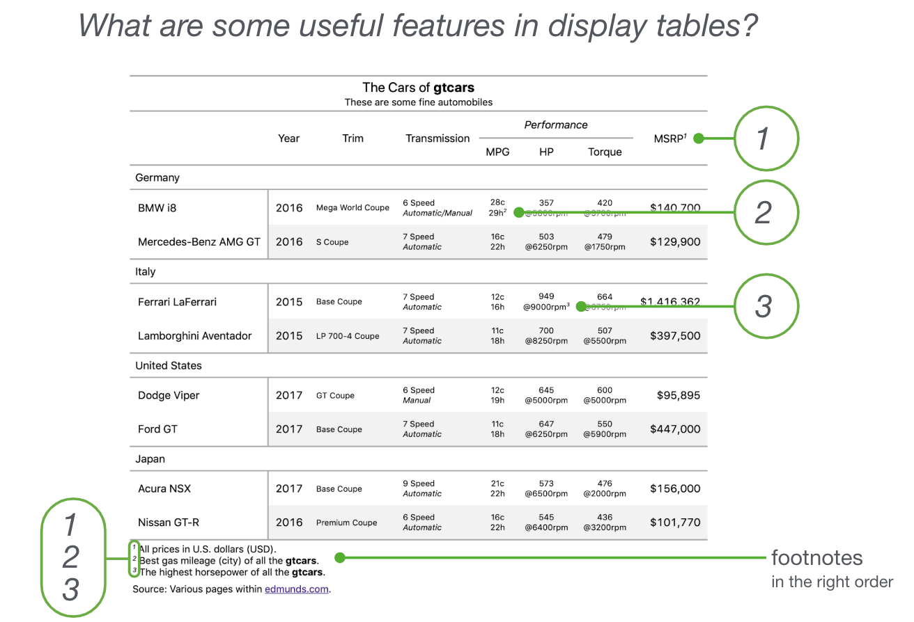
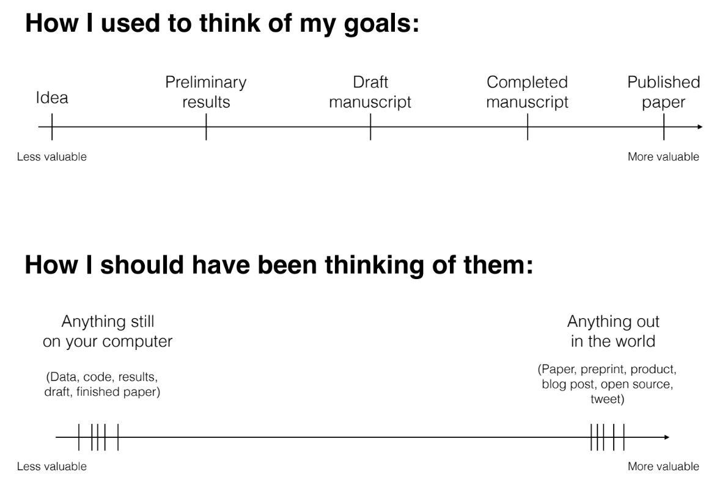
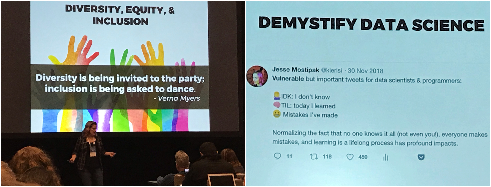

I spent last days of 2018-19 winter break in Austin, TX where I traveled for RStudio 2019 conference. I attended e-poster session and two days of the conference: Jan 17-18. Below I list some of the topics from the talks that I particularly liked and think I am likely to benefit from in the future.
Also:
- The official repo with abstracts for every session, workshop (together with workshop files free to download for most if not all of them), and e-poster can be accessed here.
Table of Contents
Data visualization
Tyler Morgan-Wall (website, twitter) showing stunning gifs and pics while presenting “3D mapping, plotting, and printing with rayshader”.
Features showed include shadowing, rotating, water transparency, visualization of simulation of different water levels. The talk had possibly the most exciting “furutre work” announced - because who doesn’t get excited about the idea of “rotating 3D ggplots”? 💘 The
rayshaderpackage is available on GitHub (link).
 (The gif on the left and img on the right are both sourced from ‘rayshader’ package GitHub website (link), as accessed on Jan 26, 2019.)
Thomas Lin Pedersen (website, twitter) giving a “gganimate live cookbook” speach (and joining Tyler’s talk on the podium of most fun presentations, I guess 😂)
The
gganimatepackage was introduced per “extension to ggplot2” providing “implementation of the grammar of animated graphics”. Presentation slides are available online here; IMHO worth checking out for inspiring ways of presenting data over time! Besides, https://gganimate.com package website comes with a bunch of examples, as the one below. (The gif sourced from ‘gganimate’ package website (link), as accessed on Jan 26, 2019.)
Documents building
Yihui Xie (website, twitter) leaving the audience very enthusiastic (or maybe more like: blown away) with all the recent develpment in document building.
The presentation starts with “In HTML and the Web I trust” (😍 I share like 99% of my work summaries with advisors and colleagues in a form HTML). With
pagedownwe can now go ahead and get paged HTML documents, e.g. business card, resume, poster. Fairly 👶 development (”status: experimental”). Presentation slides are available here. (Slides 10, 11, 15, 17 from RStudio 2019 conference talk “pagedown: Creating Beautiful PDFs with R Markdown + CSS + Your Web Browser” by Yihui Xie and Romain Lesur on Jan 18, 2019 in Austin, TX.)
Rich Iannone (website, twitter) introducing the
gtpackage.With
gtpackage (link), one can turn a data table into “information-rich, publication-quality” 🎯 table outputs. The table outputs can be in HTML, LaTeX, and RTF. The “modular” way of building these reminds me of ggplot2 plots construction. Presentation slides are available here. (Slide 5. from RStudio 2019 conference talk “Introducing the ‘gt’ package” by Rich Iannone on Jan 18, 2019 in Austin, TX.)
Community and personal development
David Robinson (website, twitter) delivering a keynoote talk “The unreasonable effectiveness of public work” (slides).
IMHO a phenomenal speach: a kind and resonating talk after which one not only wants to stand up and change the world right now 🔥, but also has same feeling a week after too 💪. Review the slides to: (a) learn Author’s points on why it so worth it to spend time on public work, (b) for a pack of actual how-to examples and guidelines on building a public portfolio, © for a bunch of interesting points made about a value of work (Author’s work, but fairly generalizable IMHO); my favourite is copy-pasted below! I particularly appreciated that all stages of advancement in building online portfolio were addressed, 👶-steps including!
 (Slide 63. from RStudio 2019 conference keynote talk “The unreasonable effectiveness of public work” by David Robinson on Jan 18, 2019 in Austin, TX.)
Jesse Mostipak (website, twitter) talking about experience of building R4DS online learning community.
Some empowering messages came in the lines of this talk - just look at the slides pics below to get the flavour 🙌. My take-home ones include a description of a data scientist: “constantly learning, constantly making mistakes, constantly learning from them”.
 (Pictures taken during RStudio 2019 conference talk “R4DS online learning community” by Jesse Mostipak on Jan 17, 2019 in Austin, TX.)